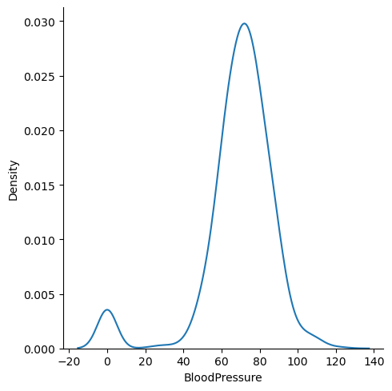
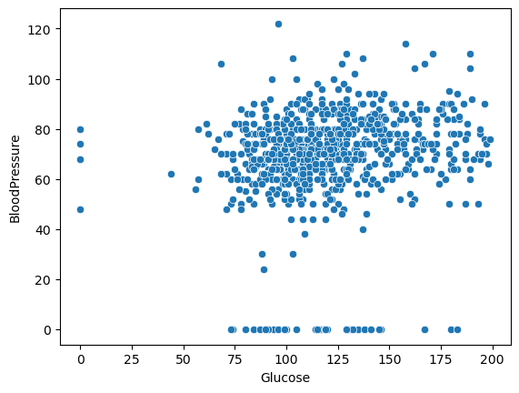
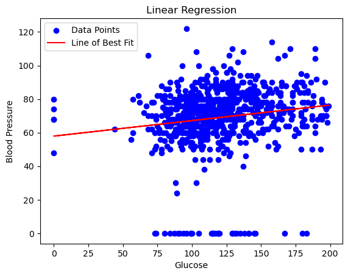

import numpy as np # library used for working with arrays
import pandas as pd # library used for data manipulation and analysis
import seaborn as sns # library for visualization
import matplotlib.pyplot as plt # library for visualization
%matplotlib inline
# to suppress warnings
import warnings
warnings.filterwarnings('ignore')Resources for basic data analysis using python, and conducting a linear regression.
#read csv dataset
pima = pd.read_csv("diabetes.csv") # load and reads the csv file
pima| Pregnancies | Glucose | BloodPressure | SkinThickness | Insulin | BMI | DiabetesPedigreeFunction | Age | Outcome | |
|---|---|---|---|---|---|---|---|---|---|
| 0 | 6 | 148 | 72 | 35 | 0 | 33.6 | 0.627 | 50 | 1 |
| 1 | 1 | 85 | 66 | 29 | 0 | 26.6 | 0.351 | 31 | 0 |
| 2 | 8 | 183 | 64 | 0 | 0 | 23.3 | 0.672 | 32 | 1 |
| 3 | 1 | 89 | 66 | 23 | 94 | 28.1 | 0.167 | 21 | 0 |
| 4 | 0 | 137 | 40 | 35 | 168 | 43.1 | 2.288 | 33 | 1 |
| ... | ... | ... | ... | ... | ... | ... | ... | ... | ... |
| 763 | 10 | 101 | 76 | 48 | 180 | 32.9 | 0.171 | 63 | 0 |
| 764 | 2 | 122 | 70 | 27 | 0 | 36.8 | 0.340 | 27 | 0 |
| 765 | 5 | 121 | 72 | 23 | 112 | 26.2 | 0.245 | 30 | 0 |
| 766 | 1 | 126 | 60 | 0 | 0 | 30.1 | 0.349 | 47 | 1 |
| 767 | 1 | 93 | 70 | 31 | 0 | 30.4 | 0.315 | 23 | 0 |
768 rows × 9 columns
# finds the number of columns in the dataset
total_cols=len(pima.axes[1])
print("Number of Columns: "+str(total_cols))Number of Columns: 9#first 10 rows
pima.head(10)| Pregnancies | Glucose | BloodPressure | SkinThickness | Insulin | BMI | DiabetesPedigreeFunction | Age | Outcome | |
|---|---|---|---|---|---|---|---|---|---|
| 0 | 6 | 148 | 72 | 35 | 0 | 33.6 | 0.627 | 50 | 1 |
| 1 | 1 | 85 | 66 | 29 | 0 | 26.6 | 0.351 | 31 | 0 |
| 2 | 8 | 183 | 64 | 0 | 0 | 23.3 | 0.672 | 32 | 1 |
| 3 | 1 | 89 | 66 | 23 | 94 | 28.1 | 0.167 | 21 | 0 |
| 4 | 0 | 137 | 40 | 35 | 168 | 43.1 | 2.288 | 33 | 1 |
| 5 | 5 | 116 | 74 | 0 | 0 | 25.6 | 0.201 | 30 | 0 |
| 6 | 3 | 78 | 50 | 32 | 88 | 31.0 | 0.248 | 26 | 1 |
| 7 | 10 | 115 | 0 | 0 | 0 | 35.3 | 0.134 | 29 | 0 |
| 8 | 2 | 197 | 70 | 45 | 543 | 30.5 | 0.158 | 53 | 1 |
| 9 | 8 | 125 | 96 | 0 | 0 | 0.0 | 0.232 | 54 | 1 |
Outcomes here represents whether someone has diabetes (1) or not (0).
#number of rows in dataset
# finds the number of rows in the dataset
total_rows=len(pima.axes[0])
print("Number of Rows: "+str(total_rows))Number of Rows: 768print('The dimension of the DataFrame is: ', pima.ndim)The dimension of the DataFrame is: 2#size of the dataset (how many elements)
pima.size6912#The info() function is used to print a concise summary of a DataFrame.
#This method prints information about a DataFrame including the index dtype and column dtypes, non-null values and memory usage.
pima.info()<class 'pandas.core.frame.DataFrame'>
RangeIndex: 768 entries, 0 to 767
Data columns (total 9 columns):
# Column Non-Null Count Dtype
--- ------ -------------- -----
0 Pregnancies 768 non-null int64
1 Glucose 768 non-null int64
2 BloodPressure 768 non-null int64
3 SkinThickness 768 non-null int64
4 Insulin 768 non-null int64
5 BMI 768 non-null float64
6 DiabetesPedigreeFunction 768 non-null float64
7 Age 768 non-null int64
8 Outcome 768 non-null int64
dtypes: float64(2), int64(7)
memory usage: 54.1 KB#functions that return a boolean value indicating whether the passed in argument value is in fact missing data.
# this is an example of chaining methods
pima.isnull().values.any()False#it can also output if there is any missing values each of the columns
pima.isnull().any()Pregnancies False
Glucose False
BloodPressure False
SkinThickness False
Insulin False
BMI False
DiabetesPedigreeFunction False
Age False
Outcome False
dtype: boolNow let’s do a summary of the statistics!
pima.iloc[:,8:]| Outcome | |
|---|---|
| 0 | 1 |
| 1 | 0 |
| 2 | 1 |
| 3 | 0 |
| 4 | 1 |
| ... | ... |
| 763 | 0 |
| 764 | 0 |
| 765 | 0 |
| 766 | 1 |
| 767 | 0 |
768 rows × 1 columns
#excludes the outcome column
pima.iloc[:,0:8].describe()| Pregnancies | Glucose | BloodPressure | SkinThickness | Insulin | BMI | DiabetesPedigreeFunction | Age | |
|---|---|---|---|---|---|---|---|---|
| count | 768.000000 | 768.000000 | 768.000000 | 768.000000 | 768.000000 | 768.000000 | 768.000000 | 768.000000 |
| mean | 3.845052 | 120.894531 | 69.105469 | 20.536458 | 79.799479 | 31.992578 | 0.471876 | 33.240885 |
| std | 3.369578 | 31.972618 | 19.355807 | 15.952218 | 115.244002 | 7.884160 | 0.331329 | 11.760232 |
| min | 0.000000 | 0.000000 | 0.000000 | 0.000000 | 0.000000 | 0.000000 | 0.078000 | 21.000000 |
| 25% | 1.000000 | 99.000000 | 62.000000 | 0.000000 | 0.000000 | 27.300000 | 0.243750 | 24.000000 |
| 50% | 3.000000 | 117.000000 | 72.000000 | 23.000000 | 30.500000 | 32.000000 | 0.372500 | 29.000000 |
| 75% | 6.000000 | 140.250000 | 80.000000 | 32.000000 | 127.250000 | 36.600000 | 0.626250 | 41.000000 |
| max | 17.000000 | 199.000000 | 122.000000 | 99.000000 | 846.000000 | 67.100000 | 2.420000 | 81.000000 |
Slay <3
From the results we can make out a few insights - The pregnancy numbers appear to be normally distributed whereas the others seem to be rightly skewed. (The mean and std deviation of pregnancies are more or less the same as opposed to the others). - Highest glucose levels is 199, pregnancies 17 and BMI 67.
Now to the fun part. Data Visualization
Plotting a distribution plot for variable ‘Blood Pressure’. displot() function which is used to visualize a distribution of the univariate variable. This function uses matplotlib to plot a histogram and fit a kernel density estimate (KDE).
sns.displot(pima['BloodPressure'], kind='kde')
plt.show()
What is the BMI of the person having the highest glucose
Max() method finds the highest value.
pima[pima['Glucose']==pima['Glucose'].max()]['BMI']661 42.9
Name: BMI, dtype: float64The person with the highest glucose value (661) has a bmi of 42.9
Finding Measures of Central Tendency (the mean,median, and mode)
# mean
m1 = pima['BMI'].mean()
print(m1)
# median
m2 = pima['BMI'].median()
print(m2)
# mode
m3 = pima['BMI'].mode()[0]
print(m3)31.992578124999998
32.0
32.0Studying the correlation between glucose and insulin using a Scatter Plot.
A scatter plot is a set of points plotted on horizontal and vertical axes. The scatter plot can be used to study the correlation between the two variables. One can also detect the extreme data points using a scatter plot.
sns.scatterplot(x='Glucose',y='BloodPressure',data=pima)
plt.show()
Now, to do a linear regression.
Linear regression is a statistical technique used to model the relationship between a dependent variable and one or more independent variables. It assumes a linear relationship between the variables, meaning that the change in the dependent variable is directly proportional to the change in the independent variable(s). The goal of linear regression is to find the best-fit line that minimizes the distance between the observed data points and the predicted values on the line. This line can then be used to make predictions or understand the impact of the independent variable(s) on the dependent variable.
Thus, linear regressions can only be done with numerical variables (for example, glucose levels or skin thickness).
import statsmodels.api as smHere, we conduct a linear regression using glucose levels as the independent variable (x) and insulin as the dependent variable (y).
X = pima['Glucose']
y = pima['BloodPressure']
# Add a constant column for the intercept term
X = sm.add_constant(X)
# Create and fit the linear regression model
model = sm.OLS(y, X)
results = model.fit()
# Print the summary of the regression results
print(results.summary())
# Make predictions
y_pred = results.predict(X)
# Access the coefficients
print("Coefficients: ", results.params)
# Plot the data points and the line of best fit
plt.scatter(X['Glucose'], y, color='blue', label='Data Points')
plt.plot(X['Glucose'], y_pred, color='red', label='Line of Best Fit')
plt.xlabel('Glucose')
plt.ylabel('Blood Pressure')
plt.title('Linear Regression')
plt.legend()
plt.show() OLS Regression Results
==============================================================================
Dep. Variable: BloodPressure R-squared: 0.023
Model: OLS Adj. R-squared: 0.022
Method: Least Squares F-statistic: 18.26
Date: Mon, 03 Jul 2023 Prob (F-statistic): 2.17e-05
Time: 16:05:01 Log-Likelihood: -3355.8
No. Observations: 768 AIC: 6716.
Df Residuals: 766 BIC: 6725.
Df Model: 1
Covariance Type: nonrobust
==============================================================================
coef std err t P>|t| [0.025 0.975]
------------------------------------------------------------------------------
const 57.9377 2.703 21.433 0.000 52.631 63.244
Glucose 0.0924 0.022 4.273 0.000 0.050 0.135
==============================================================================
Omnibus: 318.039 Durbin-Watson: 1.961
Prob(Omnibus): 0.000 Jarque-Bera (JB): 1397.465
Skew: -1.903 Prob(JB): 3.50e-304
Kurtosis: 8.403 Cond. No. 489.
==============================================================================
Notes:
[1] Standard Errors assume that the covariance matrix of the errors is correctly specified.
Coefficients: const 57.937746
Glucose 0.092376
dtype: float64
What about a logistic regression?
Use a logistic regression when exploring For the diabetes dataset, you would use logistic regression because the values are binary (they are not just 0 and 1).
For a logistic regression, 1. Fit the logistic regression - In R: - glm(Y ~ X1 + X2 + …)